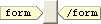
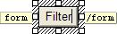

Opening a Page with an Advanced Button
There are several ways to open a second page from the current page. All require a hyperlink to the second page. The question is how to format and display the link. There are at least three methods, using:
a regular text hyperlink
a graphic with a hyperlink
a button with a hyperlink
This topic describes the third method.
Open your A5W page in the HTML Editor.
Place your cursor where you want to insert the button.
Click the Advanced Button icon on the toolbar. You will see something like this.

Double click the button and enter its label. You will see something like this.

At this point you can add more text formatting to the label.
Switch to the Source tab. You should have some HTML code that defines the form and button. Add the action and name properties within the tag. In this case the button will open balance_filter.a5w.
|
face=Verdana size=3>Filter |
To cause the button to open a page when it is clicked, add the onclick property to the tag. Note that the onclick property references the name property defined for the form in step 6.
|
face=Verdana size=3>Filter |
For the form you can use any name that is unique within the page.
See Also
Limitations
Web publishing applications only.